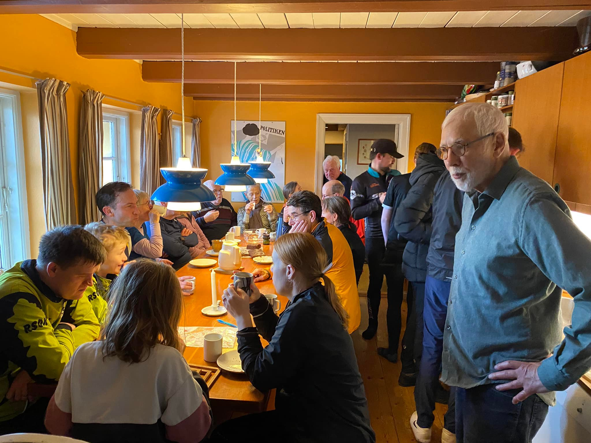

Orienteringsløb er for alle, der har lyst til at færdes i skov og i terræn og finde vej ved hjælp af kort og kompas.
Det er for børn og unge, familier med børn, seniorer og pensionister.
Du kan deltage i nøjagtigt det tempo du har lyst til, hvad enten det er i fuldt firspring eller i gang.
Vi har Rold Skov som baghave, der byder på en smuk natur oplevelse. Der er mange fordele ved at komme ud i skoven og
opleve det sociale fælleskab, som vi værner om i Klubben.
Hver tirsdag eftermiddag efter løb mødes dem der har lyst til hyggelig fællesspisning i klubhuset. Så tag familien med
og få en hyggelig eftermiddag i godt selskab. En af vores værdier i Rold Skov orienteringsklub er at dyrke det sociale -
Fælleskabet.
Du kan også læse mere om de andre spændende arrangementer der foregår i klubben.

Vil du melde dig ind i klubben?
Du kan finde mere information om hvad det koster at være medlem og hvordan du melder dig i klubben.
Du finder også svar på de oftest stillede spørgsmål, men du er selvfølgelig altid velkommen til at kontakte klubben.
Vi står altid klar til at hjælpe dig og din familie i gang med orienteringsløb, der er plads til alle.
Seneste Nyheder
2024-12-29 - Walther Rahbek:
Kalenderen for 2025 første halvår er nu opdateret. Så er der masser af træning i foråret - se kalenderen. Som
altid ingen træning når vi har divisionsturnering om søndagen
2024-12-15 - Michael Niss:
Niss'ernes julesjov. I anledning af julen har vi lavet et helt særligt træningsløb til jer. I alle juledagene vil
posterne stå ude i skoven, så der bliver rig mulighed for at komme ud og få lidt luft imellem de mange
juleretter.
Fra den 21. december kl.12:00 til den 29. december kl.12:00 vil posterne stå i skoven så
alle kan løbe eller gå en tur når det passer ind i programmet. Der vil være baner for alle, så tag evt. hele
familien med på en hyggelig gåtur. Begynder banen vil kunne gås med barnevogn eller klapvogn.
Der vil
undervejs på alle baner være en helt særlig post med en lille overraskelse til alle der kommer forbi.
Det er et helt nyt banelægger team under oplæring som har sørget for løbet, nemlig Johan Niss og Trine Niss.
Derfor vil det også glæde dem meget om man vil skrive en ganske kort julehilsen hvis man har været ude og løbe
en bane så vi har en lille ide om hvor mange der har været i skoven. Beskeden skrives til
julesjov@roldskovok.dk.
Kortene vil kunne findes i en særlig kasse ved startstedet tydeligt markeret
med klublogo, umiddelbart ved siden af oplysningsskiltene som altid står der, eller printes fra hjemmesiden på
https://roldskovok.dk/index.php?page=sider/t-loeb_kort.php.